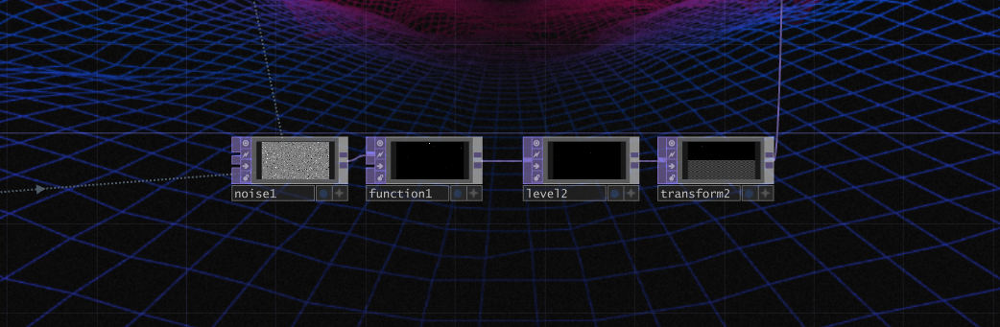
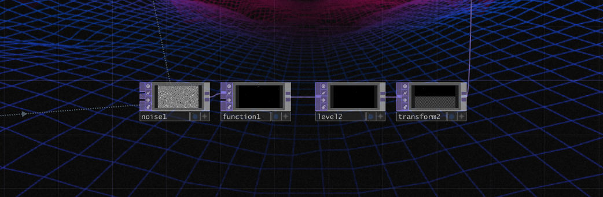

Tim sport
voir le siteLogiciels et languages utilisés
HTML
CSS
Résumé

L'objectif du projet était de faire un site web qui touche à l'animation d'hover pour nous apprendre comment bien les gérer et de savoir qu'est-ce qu'on peut faire de beau. Nous avons aussi appris à utiliser le display grid.
Le début


j'ai commencé par faire le html du site avec le display grid et le css. Nous avions juste à suivre le design déjà existant que les professeurs nous avaient donnés.
Display grid

Ensuite, une fois que tout le html était fini, mon professeur nous avait donner comme défi à réaliser "faire un display grid en utilisant le nth-child" puisqu'il avait des grosseurs différentes de "cards" qui fallait qu'on change grâce au nth-child.
animation et responsive

 

Finalement, j'ai terminé par faire les animations d'hover et le responsive. Je n'ai pas trouvé de difficulté à faire cela donc j'ai même rajouter un petit plus en faisant un hover sur les "cards" pour qu'ils grossissent.